knitr::opts_chunk$set(fig.path='Figs/')Presentation Slides: Find Here https://github.com/rob-burigo/CaseStudy2DDS
Youtube Presentation: https://www.youtube.com/watch?v=zrN4GN6Uqyw
Github Website: https://rob-burigo.github.io/
The main goal of this project is explore what characteristics in an employee have the biggest impact on employee retention and also are we then able to predict with good accuracy what employees are likely to turn over. As a bonus, we will also try and see if we can predict Monthly Salary based on the characteristics provided.
We have been given a data set with 36 Variables and 870 observations. This data set contains employee Id’s that are tied to relative characteristics like Age, Years at the company , Distance to the Office, etc.
First, we are going to explore the data set to see if there is anything interesting we can find with a top-level investigation. Next, we will use this data set to train a KNN model and test that KNN model on the validation set provided trying to get both a sensitivity and specificity of over 60%.
Lastly, we will build a regression model to predict the monthly salary for the validation set provided and try and get within $3,000 RMSE.
Top 3 most important factors when predicting attrition are * Number of Companies that the employee has worked at in their career * The number of years they have spent in their current role * How satisfied they are with their jobs * Age is close fourth We can take this data and use it in our hiring practices by keeping an eye on how long someones resume is while also using it in employee retention by monitoring HR surveys for Job Satisfaction.
Regarding job role specific findings, it was discovered that Manager is the role with the highest median salary while Manager and Research Director are positions where Employees stay the longest.
Using EDA and KNN classification model, we are able to predict with decent accuracy whether an employee will leave the company or not. We were also able to use multiple linear regression to predict the salary of an employee. * This can help us save money in on-boarding (decreasing attrition) as well as become more competitive in our salary offers.
## Read in libraries and Data
library(tidyverse)
library(naniar)
library(GGally)
library(knitr)
library(kableExtra)
library(class)
library(caret)
library(e1071)
library(mltools)
library(ROSE)
library(MASS)
library(scales)
jobs = read.csv(file.choose(), header = TRUE)#data types and null/missing data
missing_df <- left_join(
(setNames(cbind(rownames(data.frame(data_type = unlist(map(jobs, class))))
, data.frame(data_type = unlist(map(jobs, class))), row.names = NULL),
c("variable", "data_type"))),miss_var_summary(jobs),
by=c("variable"="variable"))%>%arrange(desc(n_miss))
jobs1_n <- (jobs[, sapply(jobs, class) != "character"])
jobs1_c <- (jobs[, sapply(jobs, class) == "character"])
jobs1_c_names <- names(jobs1_c)
mean = sapply(jobs, mean, na.rm = T)
#median & quartiles
median_df <- (setNames(cbind(rownames(data.frame(t(data.frame(sapply(jobs1_n, quantile, na.rm = T)))))
,data.frame(t(data.frame(sapply(jobs1_n, quantile, na.rm = T)))) , row.names = NULL),
c("variable", "Min","Q1","Median","Q3","Max")))
median_df$variable <- gsub('\\.', '-', median_df$variable)
#mean_df
mean_df <- (setNames(cbind(rownames(data.frame(data_type = mean ))
, data.frame(data_type = mean), row.names = NULL),
c("variable", "Mean")))
mean_df$variable <- gsub('\\.', '-', mean_df$variable)
jobs1_c_distinct <- rbind(
data.frame(Variable = jobs1_c_names[1],Levels = unlist(jobs1_c[,1], use.names=FALSE))%>%distinct(Variable,Levels),
data.frame(Variable = jobs1_c_names[2],Levels = unlist(jobs1_c[,2], use.names=FALSE))%>%distinct(Variable,Levels),
data.frame(Variable = jobs1_c_names[3],Levels = unlist(jobs1_c[,3], use.names=FALSE))%>%distinct(Variable,Levels),
data.frame(Variable = jobs1_c_names[4],Levels = unlist(jobs1_c[,4], use.names=FALSE))%>%distinct(Variable,Levels),
data.frame(Variable = jobs1_c_names[5],Levels = unlist(jobs1_c[,5], use.names=FALSE))%>%distinct(Variable,Levels),
data.frame(Variable = jobs1_c_names[6],Levels = unlist(jobs1_c[,6], use.names=FALSE))%>%distinct(Variable,Levels),
data.frame(Variable = jobs1_c_names[7],Levels = unlist(jobs1_c[,7], use.names=FALSE))%>%distinct(Variable,Levels),
data.frame(Variable = jobs1_c_names[8],Levels = unlist(jobs1_c[,8], use.names=FALSE))%>%distinct(Variable,Levels),
data.frame(Variable = jobs1_c_names[9],Levels = unlist(jobs1_c[,9], use.names=FALSE))%>%distinct(Variable,Levels)
)
jobs1_c_distinct2 <- jobs1_c_distinct%>%group_by(Variable)%>%summarize(Count_of_Levels = n())
#final summary
left_join(
left_join(
left_join(missing_df,mean_df,
by=c("variable"="variable")), median_df,
by=c("variable"="variable")),jobs1_c_distinct2,
by=c("variable"="Variable"))%>%dplyr::select(
variable,data_type,count_missing=n_miss,`Percent Missing (1.00 = 1%)`=pct_miss,Count_of_Levels,Mean,Median,Min,Q1,Q3,Max) %>%
kbl() %>%
kable_classic_2(full_width = F)%>%
add_header_above(c("Summary Statistics of Data" = 11))|
Summary Statistics of Data
|
||||||||||
|---|---|---|---|---|---|---|---|---|---|---|
| variable | data_type | count_missing | Percent Missing (1.00 = 1%) | Count_of_Levels | Mean | Median | Min | Q1 | Q3 | Max |
| ID | integer | 0 | 0 | NA | 435.500000 | 435.5 | 1 | 218.25 | 652.75 | 870 |
| Age | integer | 0 | 0 | NA | 36.828736 | 35.0 | 18 | 30.00 | 43.00 | 60 |
| Attrition | character | 0 | 0 | 2 | NA | NA | NA | NA | NA | NA |
| BusinessTravel | character | 0 | 0 | 3 | NA | NA | NA | NA | NA | NA |
| DailyRate | integer | 0 | 0 | NA | 815.227586 | 817.5 | 103 | 472.50 | 1165.75 | 1499 |
| Department | character | 0 | 0 | 3 | NA | NA | NA | NA | NA | NA |
| DistanceFromHome | integer | 0 | 0 | NA | 9.339080 | 7.0 | 1 | 2.00 | 14.00 | 29 |
| Education | integer | 0 | 0 | NA | 2.901149 | 3.0 | 1 | 2.00 | 4.00 | 5 |
| EducationField | character | 0 | 0 | 6 | NA | NA | NA | NA | NA | NA |
| EmployeeCount | integer | 0 | 0 | NA | 1.000000 | 1.0 | 1 | 1.00 | 1.00 | 1 |
| EmployeeNumber | integer | 0 | 0 | NA | 1029.832184 | 1039.0 | 1 | 477.25 | 1561.50 | 2064 |
| EnvironmentSatisfaction | integer | 0 | 0 | NA | 2.701149 | 3.0 | 1 | 2.00 | 4.00 | 4 |
| Gender | character | 0 | 0 | 2 | NA | NA | NA | NA | NA | NA |
| HourlyRate | integer | 0 | 0 | NA | 65.613793 | 66.0 | 30 | 48.00 | 83.00 | 100 |
| JobInvolvement | integer | 0 | 0 | NA | 2.722989 | 3.0 | 1 | 2.00 | 3.00 | 4 |
| JobLevel | integer | 0 | 0 | NA | 2.039080 | 2.0 | 1 | 1.00 | 3.00 | 5 |
| JobRole | character | 0 | 0 | 9 | NA | NA | NA | NA | NA | NA |
| JobSatisfaction | integer | 0 | 0 | NA | 2.709195 | 3.0 | 1 | 2.00 | 4.00 | 4 |
| MaritalStatus | character | 0 | 0 | 3 | NA | NA | NA | NA | NA | NA |
| MonthlyIncome | integer | 0 | 0 | NA | 6390.264368 | 4945.5 | 1081 | 2839.50 | 8182.00 | 19999 |
| MonthlyRate | integer | 0 | 0 | NA | 14325.620690 | 14074.5 | 2094 | 8092.00 | 20456.25 | 26997 |
| NumCompaniesWorked | integer | 0 | 0 | NA | 2.727586 | 2.0 | 0 | 1.00 | 4.00 | 9 |
| Over18 | character | 0 | 0 | 1 | NA | NA | NA | NA | NA | NA |
| OverTime | character | 0 | 0 | 2 | NA | NA | NA | NA | NA | NA |
| PercentSalaryHike | integer | 0 | 0 | NA | 15.200000 | 14.0 | 11 | 12.00 | 18.00 | 25 |
| PerformanceRating | integer | 0 | 0 | NA | 3.151724 | 3.0 | 3 | 3.00 | 3.00 | 4 |
| RelationshipSatisfaction | integer | 0 | 0 | NA | 2.706897 | 3.0 | 1 | 2.00 | 4.00 | 4 |
| StandardHours | integer | 0 | 0 | NA | 80.000000 | 80.0 | 80 | 80.00 | 80.00 | 80 |
| StockOptionLevel | integer | 0 | 0 | NA | 0.783908 | 1.0 | 0 | 0.00 | 1.00 | 3 |
| TotalWorkingYears | integer | 0 | 0 | NA | 11.052874 | 10.0 | 0 | 6.00 | 15.00 | 40 |
| TrainingTimesLastYear | integer | 0 | 0 | NA | 2.832184 | 3.0 | 0 | 2.00 | 3.00 | 6 |
| WorkLifeBalance | integer | 0 | 0 | NA | 2.781609 | 3.0 | 1 | 2.00 | 3.00 | 4 |
| YearsAtCompany | integer | 0 | 0 | NA | 6.962069 | 5.0 | 0 | 3.00 | 10.00 | 40 |
| YearsInCurrentRole | integer | 0 | 0 | NA | 4.204598 | 3.0 | 0 | 2.00 | 7.00 | 18 |
| YearsSinceLastPromotion | integer | 0 | 0 | NA | 2.168966 | 1.0 | 0 | 0.00 | 3.00 | 15 |
| YearsWithCurrManager | integer | 0 | 0 | NA | 4.140230 | 3.0 | 0 | 2.00 | 7.00 | 17 |
## PLotting the continuous variables first
jobs[, "age_bin"] <- bin_data(jobs$Age, bins=10, binType = "explicit")
ggplot(data=jobs, aes(age_bin))+
geom_bar(aes(fill=Attrition), position="fill")+ ggtitle('% Attrition based on Age Group') 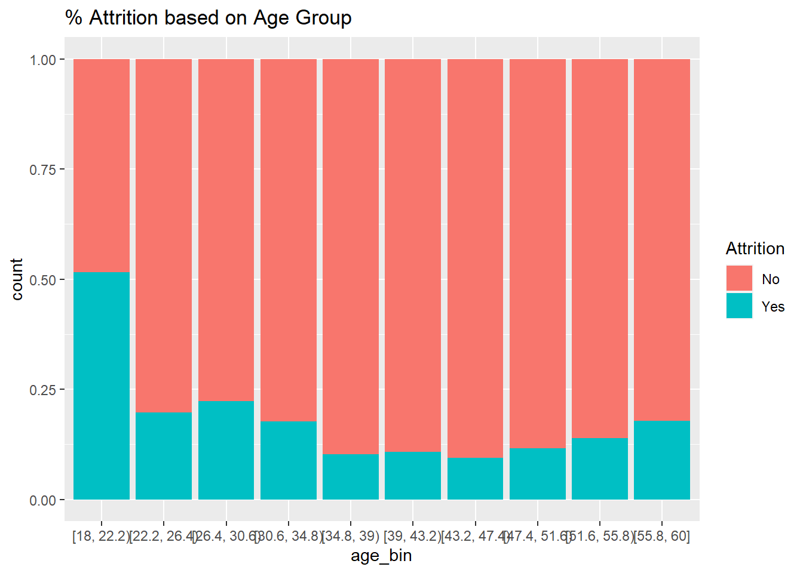
jobs[, "distance_bin"] <- bin_data(jobs$DistanceFromHome, bins=10, binType = "explicit")
ggplot(data=jobs, aes(distance_bin))+
geom_bar(aes(fill=Attrition), position="fill")+ ggtitle('% Attrition based on Distance Group') 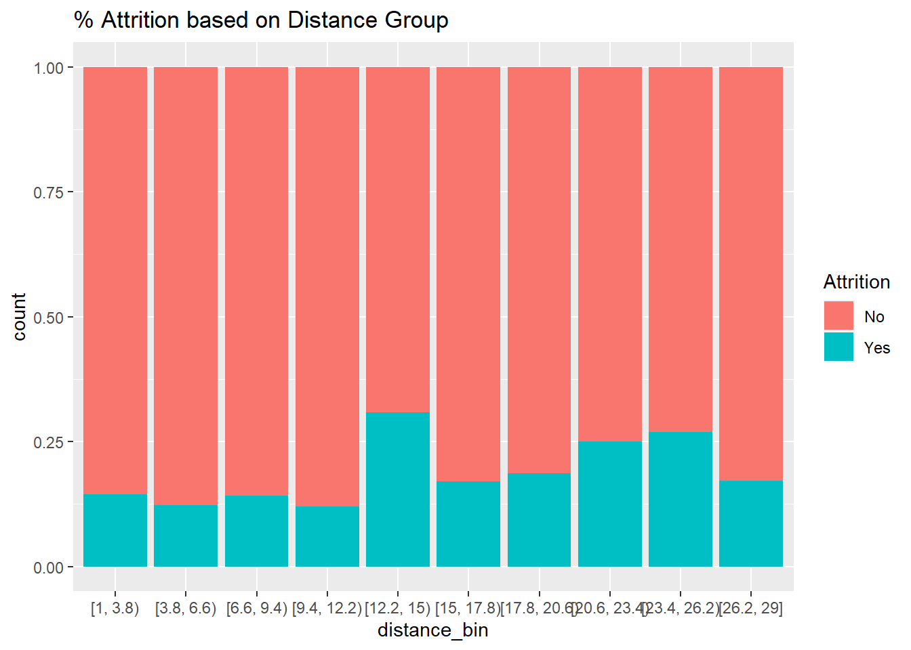
jobs[, "income_bin"] <- bin_data(jobs$MonthlyIncome, bins=10, binType = "explicit")
ggplot(data=jobs, aes(income_bin))+
geom_bar(aes(fill=Attrition), position="fill")+ ggtitle('% Attrition based on Income Group')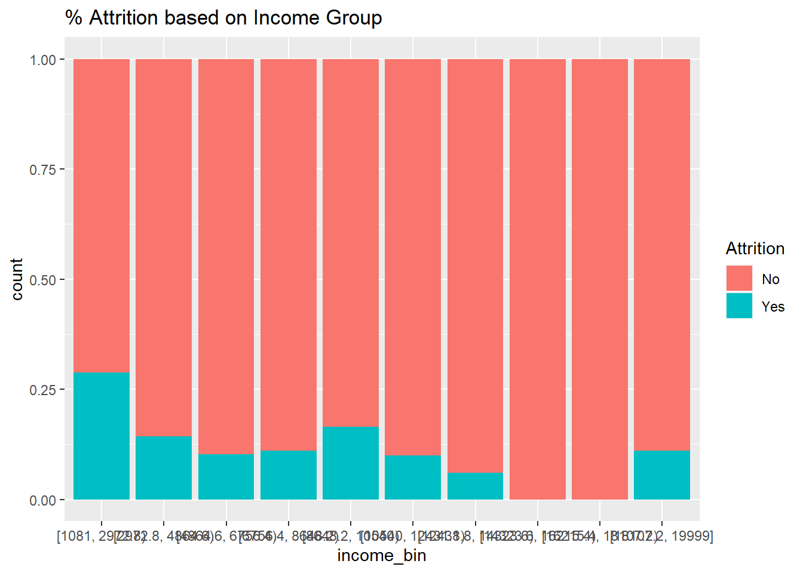
##Plotting the categorical variables now
ggplot(data=jobs, aes(YearsInCurrentRole))+
geom_bar(aes(fill=Attrition), position="fill")+ ggtitle('% Attrition based on Years in Current Role')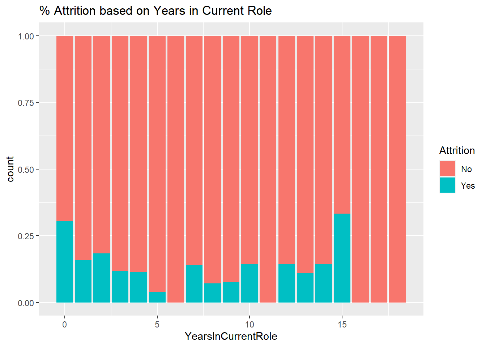
ggplot(data=jobs, aes(YearsAtCompany))+
geom_bar(aes(fill=Attrition), position="fill")+ ggtitle('% Attrition based on Years at Company')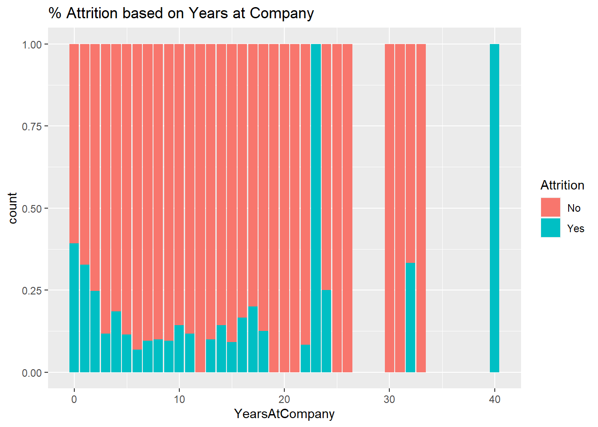
ggplot(data=jobs, aes(WorkLifeBalance))+
geom_bar(aes(fill=Attrition), position="fill")+ ggtitle('% Attrition based on Work Life Balance')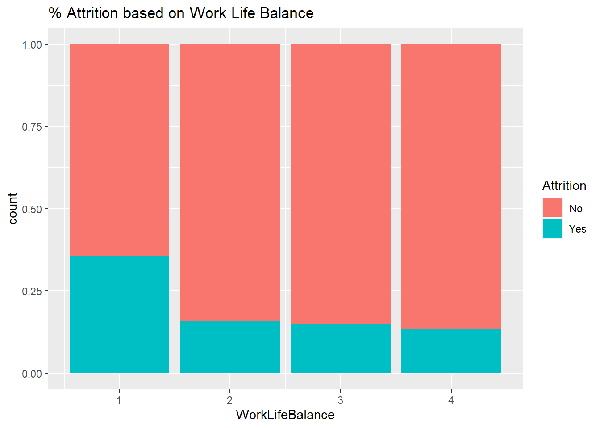
ggplot(data=jobs, aes(NumCompaniesWorked))+
geom_bar(aes(fill=Attrition), position="fill")+ ggtitle('% Attrition based on Number of Companies Worked')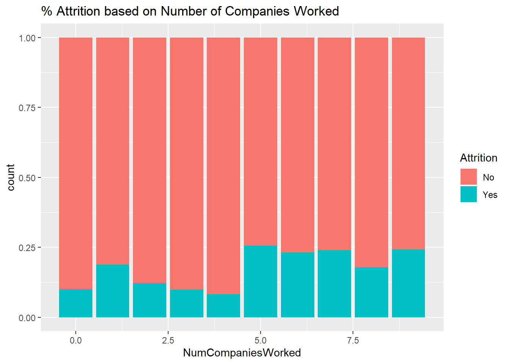
ggplot(data=jobs, aes(Education))+
geom_bar(aes(fill=Attrition), position="fill")+ ggtitle('% Attrition based on Education')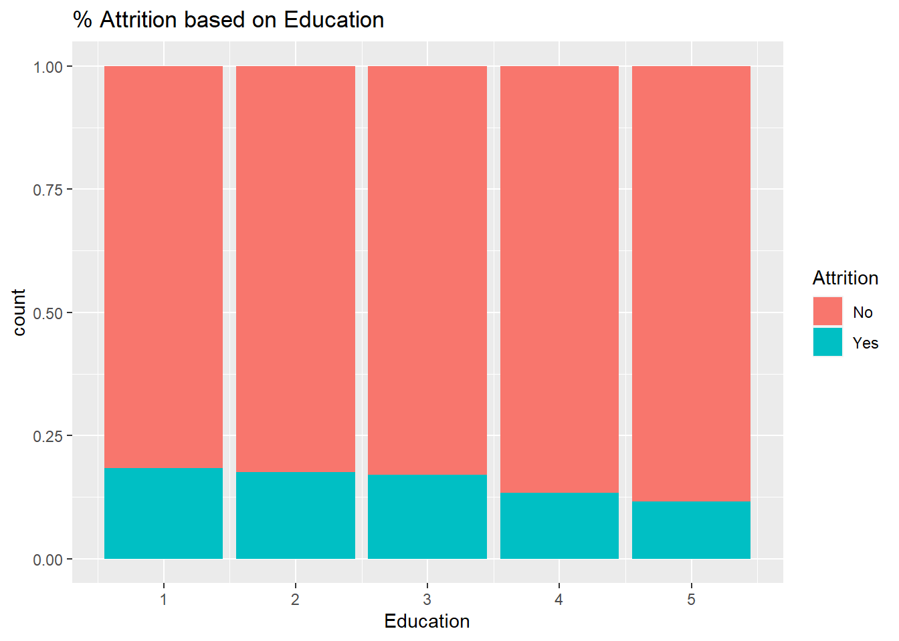
ggplot(data=jobs, aes(JobSatisfaction))+
geom_bar(aes(fill=Attrition), position="fill")+ ggtitle('% Attrition based on Job Satisfaction')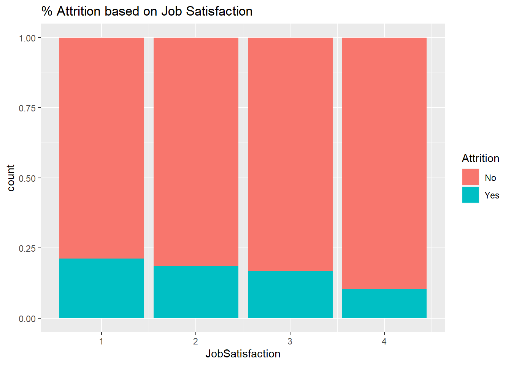
ggplot(data=jobs, aes(JobLevel))+
geom_bar(aes(fill=Attrition), position="fill")+ ggtitle('% Attrition based on Job Level')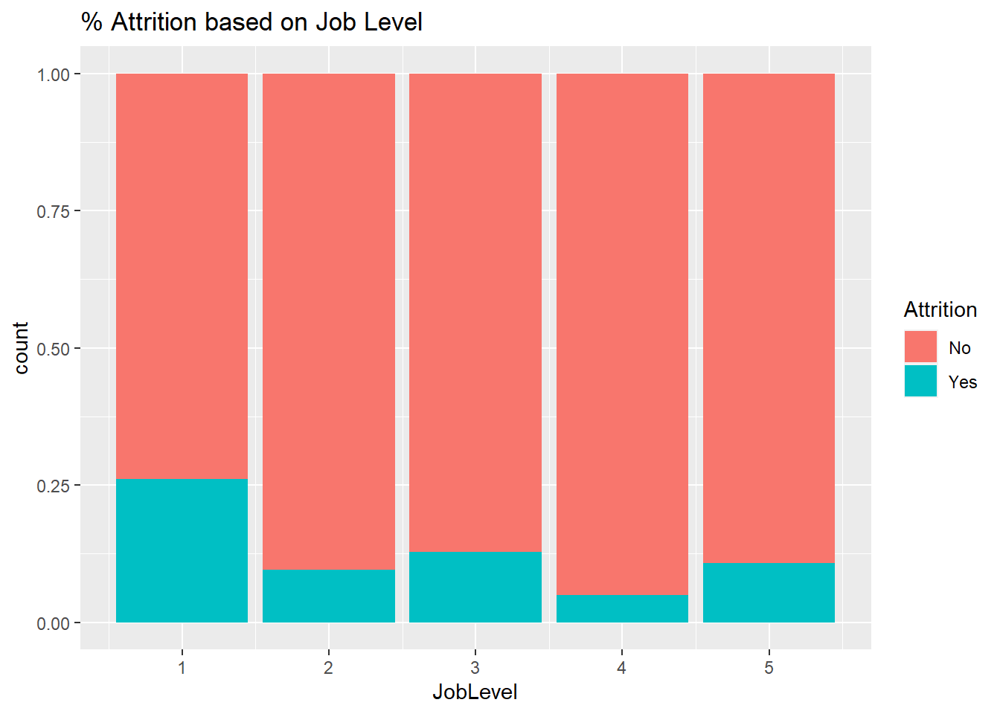
ggplot(data=jobs, aes(JobRole))+
geom_bar(aes(fill=Attrition), position="fill")+ ggtitle('% Attrition based on Job Role')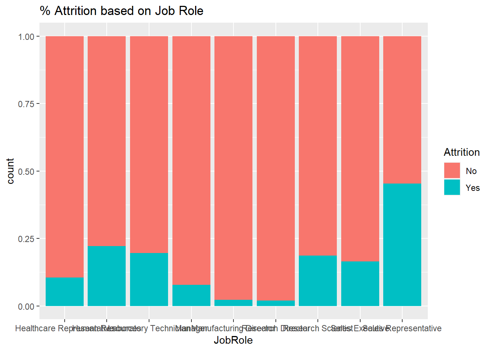
#Converting Job Role to Numeric So can use in model
jobs = jobs %>%
mutate(Job_Role_num = case_when(
jobs$JobRole=='Healthcare Representative' ~ 1,
jobs$JobRole=='Human Resources' ~ 2,
jobs$JobRole=='Laboratory Technician' ~ 3,
jobs$JobRole=='Manager' ~ 4,
jobs$JobRole=='Manufacturing Director' ~ 5,
jobs$JobRole=='Research Director' ~ 6,
jobs$JobRole=='Research Scientist' ~ 7,
jobs$JobRole=='Sales Executive' ~ 8,
jobs$JobRole=='Sales Representative' ~ 9
)
)
#Creating Data frame of Just the variables that seem important
jobs_reduced = jobs[,c(2,3,7,8,16,18,20,22,32,33,34,37,40)]
#Removing Age Bin
drop <- c("age_bin")
jobs_reduced = jobs_reduced[,!(names(jobs_reduced) %in% drop)]
#Converting Yes/No into 1/0
jobs_reduced_cor <- jobs_reduced %>%
mutate(Attrition = ifelse(Attrition == "No",0,1))
cor(jobs_reduced_cor)## Age Attrition DistanceFromHome Education JobLevel JobSatisfaction MonthlyIncome
## Age 1.000000000 -0.14938358 0.006647112 0.217290207 0.47942356 -0.022363414 0.484288301
## Attrition -0.149383577 1.00000000 0.087136293 -0.049442357 -0.16213644 -0.107520935 -0.154914955
## DistanceFromHome 0.006647112 0.08713629 1.000000000 0.049512940 0.02172705 -0.021218476 -0.006667155
## Education 0.217290207 -0.04944236 0.049512940 1.000000000 0.13038591 0.013111079 0.127131394
## JobLevel 0.479423564 -0.16213644 0.021727054 0.130385908 1.00000000 -0.050306065 0.951640049
## JobSatisfaction -0.022363414 -0.10752094 -0.021218476 0.013111079 -0.05030606 1.000000000 -0.053148530
## MonthlyIncome 0.484288301 -0.15491496 -0.006667155 0.127131394 0.95164005 -0.053148530 1.000000000
## NumCompaniesWorked 0.293521877 0.06101889 -0.048909244 0.160918010 0.14083483 -0.075753415 0.155894318
## WorkLifeBalance -0.012229885 -0.08978971 -0.013820292 0.009824289 0.03028387 -0.026470304 0.020804889
## YearsAtCompany 0.289538716 -0.12875406 -0.020830094 0.061974487 0.52058351 0.028363964 0.491378966
## YearsInCurrentRole 0.208349696 -0.15621571 -0.008407782 0.061381620 0.39130482 -0.003471690 0.361840521
## Job_Role_num -0.105969885 0.09053860 -0.012799586 0.063075019 -0.07429945 0.008906795 -0.075165525
## NumCompaniesWorked WorkLifeBalance YearsAtCompany YearsInCurrentRole Job_Role_num
## Age 0.293521877 -0.012229885 0.28953872 0.208349696 -0.105969885
## Attrition 0.061018887 -0.089789709 -0.12875406 -0.156215707 0.090538602
## DistanceFromHome -0.048909244 -0.013820292 -0.02083009 -0.008407782 -0.012799586
## Education 0.160918010 0.009824289 0.06197449 0.061381620 0.063075019
## JobLevel 0.140834828 0.030283868 0.52058351 0.391304819 -0.074299446
## JobSatisfaction -0.075753415 -0.026470304 0.02836396 -0.003471690 0.008906795
## MonthlyIncome 0.155894318 0.020804889 0.49137897 0.361840521 -0.075165525
## NumCompaniesWorked 1.000000000 0.021316529 -0.14202588 -0.103814233 -0.008968013
## WorkLifeBalance 0.021316529 1.000000000 0.02947258 0.082104934 0.025982297
## YearsAtCompany -0.142025883 0.029472580 1.00000000 0.776116418 -0.091223937
## YearsInCurrentRole -0.103814233 0.082104934 0.77611642 1.000000000 -0.035873768
## Job_Role_num -0.008968013 0.025982297 -0.09122394 -0.035873768 1.000000000#Get the median monthly income and median years in current role.
median_data = jobs %>% group_by(JobRole) %>% summarize(medianMonthlyIncome = median(MonthlyIncome), medianYearsCurrentRole = median(YearsInCurrentRole))
#created a bar chart comparing the median monthly income per job role
median_data%>%
head(10)%>%
ggplot(aes(x=reorder(JobRole,medianMonthlyIncome),y=medianMonthlyIncome, fill=JobRole)) +
xlab("Job Role")+
geom_col() + coord_flip() + ggtitle('Median Monthly Income by Role')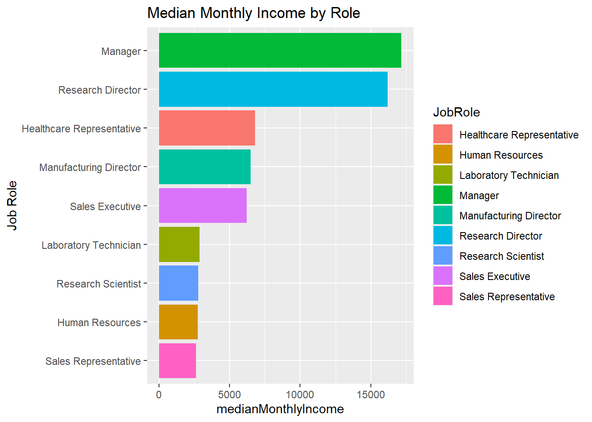
#created a bar chart comparing the median years in current role per job role
median_data%>%
head(10)%>%
ggplot(aes(x=reorder(JobRole,medianYearsCurrentRole),y=medianYearsCurrentRole, fill=JobRole)) +
xlab("Job Role")+
geom_col() + coord_flip() + ggtitle('Median Years in Current Role')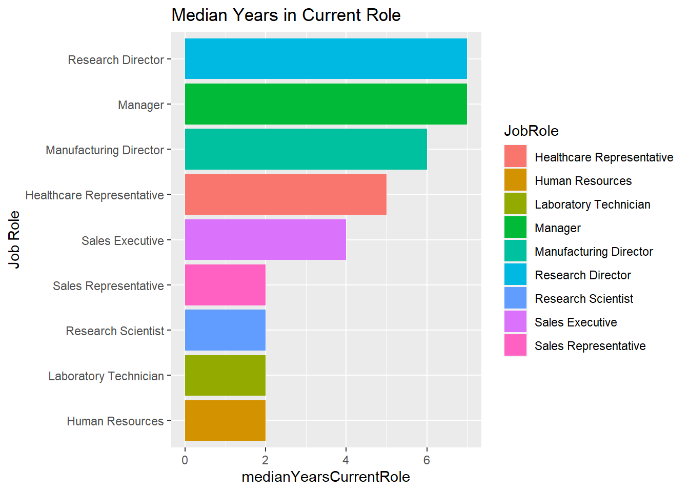
## Manager is the role with the highest median salary
## Manager and Research Director are positions where Employees stay the longest. #Converting Response Variable to a Factor to run Log Reg
jobs_reduced$Attrition = as.factor(jobs_reduced$Attrition)
#Splitting into Train and Test
set.seed(512)
splitPerc = .75
#Running Log Reg and also with a Stepwise to determine important Factors
trainIndices = sample(1:dim(jobs_reduced)[1],round(splitPerc * dim(jobs_reduced)[1]))
train = jobs_reduced[trainIndices,]
test = jobs_reduced[-trainIndices,]
full.logistic<-glm(Attrition~.,family="binomial",data=train)
step.logistic<-full.logistic %>% stepAIC(trace=FALSE)
summary(step.logistic)##
## Call:
## glm(formula = Attrition ~ Age + DistanceFromHome + JobSatisfaction +
## MonthlyIncome + NumCompaniesWorked + WorkLifeBalance + YearsAtCompany +
## YearsInCurrentRole + Job_Role_num, family = "binomial", data = train)
##
## Deviance Residuals:
## Min 1Q Median 3Q Max
## -1.4684 -0.6068 -0.4568 -0.2795 2.9808
##
## Coefficients:
## Estimate Std. Error z value Pr(>|z|)
## (Intercept) 9.763e-01 7.616e-01 1.282 0.199890
## Age -4.275e-02 1.601e-02 -2.670 0.007578 **
## DistanceFromHome 3.437e-02 1.362e-02 2.523 0.011636 *
## JobSatisfaction -2.974e-01 1.027e-01 -2.896 0.003774 **
## MonthlyIncome -9.661e-05 3.999e-05 -2.416 0.015708 *
## NumCompaniesWorked 1.630e-01 4.691e-02 3.474 0.000513 ***
## WorkLifeBalance -3.784e-01 1.520e-01 -2.489 0.012819 *
## YearsAtCompany 8.305e-02 3.618e-02 2.295 0.021719 *
## YearsInCurrentRole -1.532e-01 5.509e-02 -2.780 0.005433 **
## Job_Role_num 7.819e-02 4.745e-02 1.648 0.099390 .
## ---
## Signif. codes: 0 '***' 0.001 '**' 0.01 '*' 0.05 '.' 0.1 ' ' 1
##
## (Dispersion parameter for binomial family taken to be 1)
##
## Null deviance: 562.19 on 651 degrees of freedom
## Residual deviance: 503.89 on 642 degrees of freedom
## AIC: 523.89
##
## Number of Fisher Scoring iterations: 5# 3 Most Important factors for Attrition are NumCompaniesWorked , YearsInCurrentRole , JobSatisfaction (Age is a close 4th)# Adding scaled variables for the variables I will use. This is to reduce the scale and provide a better model.
jobs_reduced$ZAge = scale(jobs_reduced$Age)
jobs_reduced$ZJS = scale(jobs_reduced$JobSatisfaction)
jobs_reduced$ZNumCOmpanies = scale(jobs_reduced$NumCompaniesWorked)
jobs_reduced$YearsinROle = scale(jobs_reduced$YearsInCurrentRole)
jobs_reduced$ZWLB = scale(jobs_reduced$WorkLifeBalance)
jobs_reduced$ZMonthlyIncome = scale(jobs_reduced$MonthlyIncome)
jobs_reduced$ZDistance = scale(jobs_reduced$DistanceFromHome)
jobs_reduced$ZYearsComp = scale(jobs_reduced$YearsAtCompany)
jobs_reduced$ZJobRoleNum = scale(jobs_reduced$Job_Role_num)
# Looping for many k and the average of training/test partitions
set.seed(544)
splitPerc = .80
iterations = 100
numks = 30
masterAcc = matrix(nrow = iterations, ncol = numks)
for(j in 1:iterations)
{
accs = data.frame(accuracy = numeric(30), k = numeric(30))
trainIndices = sample(1:dim(jobs_reduced)[1],round(splitPerc * dim(jobs_reduced)[1]))
train = jobs_reduced[trainIndices,]
test = jobs_reduced[-trainIndices,]
for(i in 1:numks)
{
classifications = knn(train[,c(1,3,6,7,8,9,10,11,12)],test[,c(1,3,6,7,8,9,10,11,12)],train$Attrition, prob = TRUE, k = i)
table(classifications,test$Attrition)
CM = confusionMatrix(table(classifications,test$Attrition))
masterAcc[j,i] = CM$overall[1]
}
}
MeanAcc = colMeans(masterAcc)
plot(seq(1,numks,1),MeanAcc, type = "l")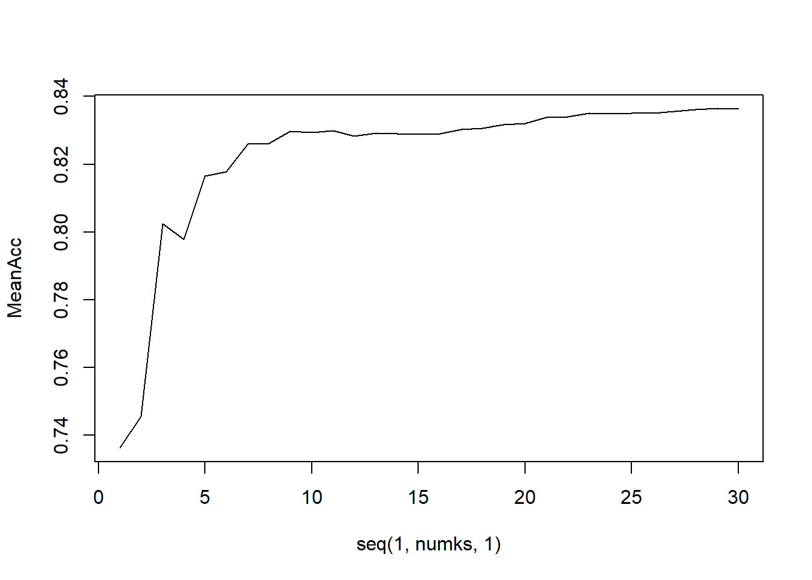
# From this it is clear that the best value for k in our KNN is 15.
# k = 15
# I want to balance out the data set since the majority of the Attrition is No. After testing I am going to use the over sampling method
train_balanced_over <- ovun.sample(Attrition ~ ., data = jobs_reduced, method = "over",N = 1460)$data
# Running the model
classifications = knn.cv(train_balanced_over[,c(13,14,15,16,17,18,19,20,21)],train_balanced_over$Attrition, prob = TRUE, k = 15)
# Assessing the Model
confusionMatrix(classifications,train_balanced_over$Attrition)## Confusion Matrix and Statistics
##
## Reference
## Prediction No Yes
## No 445 171
## Yes 285 559
##
## Accuracy : 0.6877
## 95% CI : (0.6632, 0.7114)
## No Information Rate : 0.5
## P-Value [Acc > NIR] : < 2.2e-16
##
## Kappa : 0.3753
##
## Mcnemar's Test P-Value : 1.212e-07
##
## Sensitivity : 0.6096
## Specificity : 0.7658
## Pos Pred Value : 0.7224
## Neg Pred Value : 0.6623
## Prevalence : 0.5000
## Detection Rate : 0.3048
## Detection Prevalence : 0.4219
## Balanced Accuracy : 0.6877
##
## 'Positive' Class : No
## #Sensitivity Over .60
#Specificity Over .75
## Testing out the KNN Model on the Test Data Set
jobs_no_attrition = read.csv(file.choose(), header = TRUE)
jobs_no_attrition = jobs_no_attrition %>%
mutate(Job_Role_num = case_when(
jobs_no_attrition$JobRole=='Healthcare Representative' ~ 1,
jobs_no_attrition$JobRole=='Human Resources' ~ 2,
jobs_no_attrition$JobRole=='Laboratory Technician' ~ 3,
jobs_no_attrition$JobRole=='Manager' ~ 4,
jobs_no_attrition$JobRole=='Manufacturing Director' ~ 5,
jobs_no_attrition$JobRole=='Research Director' ~ 6,
jobs_no_attrition$JobRole=='Research Scientist' ~ 7,
jobs_no_attrition$JobRole=='Sales Executive' ~ 8,
jobs_no_attrition$JobRole=='Sales Representative' ~ 9
)
)
jobs_reduced_no_attrition = jobs_no_attrition[,c(2,6,17,19,21,31,32,33,36)]
jobs_reduced_no_attrition$ZAge = scale(jobs_reduced_no_attrition$Age)
jobs_reduced_no_attrition$ZJS = scale(jobs_reduced_no_attrition$JobSatisfaction)
jobs_reduced_no_attrition$ZNumCOmpanies = scale(jobs_reduced_no_attrition$NumCompaniesWorked)
jobs_reduced_no_attrition$YearsinROle = scale(jobs_reduced_no_attrition$YearsInCurrentRole)
jobs_reduced_no_attrition$ZWLB = scale(jobs_reduced_no_attrition$WorkLifeBalance)
jobs_reduced_no_attrition$ZMonthlyIncome = scale(jobs_reduced_no_attrition$MonthlyIncome)
jobs_reduced_no_attrition$ZDistance = scale(jobs_reduced_no_attrition$DistanceFromHome)
jobs_reduced_no_attrition$ZYearsComp = scale(jobs_reduced_no_attrition$YearsAtCompany)
jobs_reduced_no_attrition$ZJobRoleNum = scale(jobs_reduced_no_attrition$Job_Role_num)
classifications_new = knn(train_balanced_over[,c(13,14,15,16,17,18,19,20,21)],jobs_reduced_no_attrition[,c(10,11,12,13,14,15,16,17,18)],train_balanced_over$Attrition, prob = TRUE, k = 15)
summary(classifications_new)## No Yes
## 178 122# Here are the classifications associated with the competition set that I will submit
classifications_new## [1] No No Yes No No No Yes No Yes Yes Yes No Yes No No Yes No Yes No No No No No Yes Yes No No Yes Yes
## [30] Yes No No No No Yes Yes No No No No No No No No Yes No No Yes Yes No No No No No No No No Yes
## [59] Yes No Yes No Yes No No Yes No Yes Yes Yes No Yes Yes Yes No No No Yes No No No No Yes Yes Yes No No
## [88] No No Yes Yes No No No Yes Yes No Yes No Yes No No No No Yes No No No No No Yes No Yes No No No
## [117] No No Yes No No No No Yes No No Yes No No No Yes No No Yes Yes No Yes No Yes Yes Yes No Yes No No
## [146] No Yes Yes No No Yes No No Yes Yes Yes Yes Yes Yes No No No Yes Yes No Yes No Yes No No Yes No Yes No
## [175] No No No No No No Yes Yes No No Yes Yes No Yes Yes No No No Yes No Yes Yes No No No Yes No No No
## [204] Yes No Yes No Yes Yes No Yes No Yes Yes No No Yes No Yes No No No No No Yes No No No No Yes Yes Yes
## [233] No No No No No No No No Yes No No No No Yes Yes Yes No No Yes Yes No Yes No No No Yes No No No
## [262] Yes No Yes No Yes No No No Yes Yes Yes Yes Yes Yes Yes Yes Yes No Yes Yes No Yes Yes Yes Yes No No Yes No
## [291] Yes Yes No Yes No No No Yes No No
## attr(,"prob")
## [1] 0.7333333 0.5333333 0.7647059 1.0000000 1.0000000 0.6250000 0.6111111 0.5333333 0.6363636 0.5333333 0.8235294
## [12] 0.5555556 0.9047619 1.0000000 0.7333333 0.6842105 0.6000000 0.7647059 0.7333333 0.5294118 0.5333333 0.5263158
## [23] 0.7333333 0.7058824 0.7647059 1.0000000 0.6000000 0.8947368 0.8666667 0.5555556 1.0000000 0.5625000 1.0000000
## [34] 0.8000000 0.8125000 0.8000000 0.5555556 1.0000000 0.6875000 1.0000000 0.7333333 0.6666667 1.0000000 0.5714286
## [45] 0.7777778 1.0000000 1.0000000 0.7894737 0.6666667 0.6666667 0.7333333 1.0000000 0.7058824 0.7777778 0.7333333
## [56] 0.7333333 1.0000000 0.9333333 0.5714286 1.0000000 0.6000000 0.7777778 0.6250000 0.8000000 1.0000000 0.8823529
## [67] 0.6000000 0.6666667 0.5555556 0.7647059 0.6315789 0.6666667 0.6250000 0.8125000 1.0000000 1.0000000 1.0000000
## [78] 0.7777778 0.5333333 0.8666667 0.6000000 0.6000000 0.8125000 0.5333333 0.8000000 0.7333333 0.8000000 0.7333333
## [89] 0.5333333 0.5625000 0.6250000 0.6666667 0.5000000 1.0000000 0.9090909 0.6000000 1.0000000 0.8125000 0.5882353
## [100] 0.7333333 1.0000000 0.6666667 1.0000000 1.0000000 0.8500000 1.0000000 0.6666667 1.0000000 0.8666667 1.0000000
## [111] 0.7368421 0.7058824 0.5625000 0.5625000 1.0000000 0.6666667 0.5333333 0.6000000 0.7647059 0.8666667 0.5882353
## [122] 0.7058824 1.0000000 0.6250000 0.5333333 0.6666667 0.7333333 0.7058824 0.6666667 1.0000000 0.6000000 0.8000000
## [133] 0.5333333 0.6666667 0.7333333 1.0000000 0.6250000 0.6000000 0.6470588 0.7333333 0.7647059 1.0000000 0.8000000
## [144] 0.6666667 0.6666667 0.8000000 0.5882353 0.5238095 0.7222222 0.7333333 0.6666667 1.0000000 1.0000000 0.5333333
## [155] 0.6666667 0.6315789 0.7727273 0.5882353 0.6666667 0.6666667 0.5789474 0.6000000 0.5333333 0.5333333 1.0000000
## [166] 0.8000000 0.7333333 0.8666667 0.7333333 0.6666667 0.6000000 1.0000000 0.8666667 0.7333333 0.6000000 0.7333333
## [177] 1.0000000 0.7333333 1.0000000 0.6000000 0.6875000 0.6000000 1.0000000 0.6315789 0.5294118 0.5333333 0.8000000
## [188] 0.7333333 0.7142857 1.0000000 0.5882353 0.6666667 0.6470588 0.7333333 0.8000000 0.5625000 0.6000000 1.0000000
## [199] 0.7333333 0.5333333 0.6666667 0.5333333 0.6000000 0.6666667 1.0000000 0.9333333 0.6666667 0.9047619 0.6956522
## [210] 1.0000000 0.7500000 1.0000000 0.7222222 0.9444444 0.8000000 1.0000000 0.8235294 0.6000000 0.8823529 0.6842105
## [221] 1.0000000 0.5333333 0.5333333 0.7058824 0.6666667 0.6666667 1.0000000 0.8125000 0.7333333 0.7333333 0.6315789
## [232] 0.7647059 0.7333333 0.8000000 0.6000000 0.7333333 0.6000000 1.0000000 0.7333333 0.8235294 0.7777778 0.5333333
## [243] 1.0000000 1.0000000 0.5333333 0.5000000 0.7368421 0.5294118 0.5625000 0.7333333 0.8947368 0.5625000 1.0000000
## [254] 0.9411765 1.0000000 1.0000000 1.0000000 0.5333333 0.6666667 0.5294118 1.0000000 0.7222222 1.0000000 0.5333333
## [265] 0.7333333 0.6666667 0.5333333 0.7333333 0.6000000 0.5625000 0.5333333 0.8000000 0.6666667 0.8500000 0.7333333
## [276] 0.7333333 0.7333333 0.6666667 0.5333333 1.0000000 0.8666667 1.0000000 0.5333333 1.0000000 0.6666667 0.5882353
## [287] 1.0000000 0.8125000 0.8000000 0.6666667 0.6875000 0.6666667 0.7647059 0.8666667 0.6875000 0.6666667 1.0000000
## [298] 0.8235294 0.6000000 0.7333333
## Levels: No Yes# Going to convert the monthly income to a categorical to see which variables are most related with Monthly Income.
jobs = jobs %>%
mutate(Monthly_Income_Block = case_when(
jobs$MonthlyIncome<= 5000 ~ '<=5k',
jobs$MonthlyIncome > 5000 ~ '>5k',
)
)
drop <- c("EmployeeCount","Over18","OverTime","MonthlyIncome","age_bin","distance_bin","income_bin","Job_Role_num")
jobs_reg = jobs[,!(names(jobs) %in% drop)]
jobs_reg$Monthly_Income_Block = as.factor(jobs_reg$Monthly_Income_Block)
#Running Logistic Regression with Stepwise
full.logistic<-glm(Monthly_Income_Block~.,family="binomial",data=jobs_reg)
step.logistic<-full.logistic %>% stepAIC(trace=FALSE)
# Looking at the summary to figure out which factors are the most significant for salary.
summary(step.logistic)##
## Call:
## glm(formula = Monthly_Income_Block ~ ID + Age + BusinessTravel +
## DistanceFromHome + EmployeeNumber + EnvironmentSatisfaction +
## Gender + HourlyRate + JobLevel + JobSatisfaction + TotalWorkingYears +
## YearsAtCompany + YearsInCurrentRole, family = "binomial",
## data = jobs_reg)
##
## Deviance Residuals:
## Min 1Q Median 3Q Max
## -2.24736 -0.00005 -0.00002 0.00004 1.72927
##
## Coefficients:
## Estimate Std. Error z value Pr(>|z|)
## (Intercept) -4.423e+01 1.718e+03 -0.026 0.9795
## ID -8.516e-04 5.090e-04 -1.673 0.0943 .
## Age 2.784e-02 1.990e-02 1.399 0.1619
## BusinessTravelTravel_Frequently -2.530e-01 4.462e-01 -0.567 0.5707
## BusinessTravelTravel_Rarely 3.739e-01 3.797e-01 0.985 0.3248
## DistanceFromHome -3.928e-02 1.504e-02 -2.612 0.0090 **
## EmployeeNumber 3.464e-04 2.081e-04 1.665 0.0960 .
## EnvironmentSatisfaction -1.706e-01 1.165e-01 -1.464 0.1432
## GenderMale 4.748e-01 2.561e-01 1.854 0.0638 .
## HourlyRate 9.841e-03 6.383e-03 1.542 0.1231
## JobLevel 2.119e+01 8.590e+02 0.025 0.9803
## JobSatisfaction 2.668e-01 1.152e-01 2.317 0.0205 *
## TotalWorkingYears 7.291e-02 4.155e-02 1.755 0.0793 .
## YearsAtCompany -1.061e-01 5.609e-02 -1.891 0.0586 .
## YearsInCurrentRole 9.316e-02 6.579e-02 1.416 0.1568
## ---
## Signif. codes: 0 '***' 0.001 '**' 0.01 '*' 0.05 '.' 0.1 ' ' 1
##
## (Dispersion parameter for binomial family taken to be 1)
##
## Null deviance: 1205.78 on 869 degrees of freedom
## Residual deviance: 370.73 on 855 degrees of freedom
## AIC: 400.73
##
## Number of Fisher Scoring iterations: 20# Fitting the MLR Model
set.seed(125)
splitPerc = .75
trainIndices = sample(1:dim(jobs)[1],round(splitPerc * dim(jobs)[1]))
train_reg = jobs[trainIndices,]
test_reg = jobs[-trainIndices,]
fit = lm(MonthlyIncome ~ DistanceFromHome + JobSatisfaction + TotalWorkingYears + Gender + YearsAtCompany + Age + EmployeeNumber + EnvironmentSatisfaction + HourlyRate + JobLevel + YearsInCurrentRole, data = train_reg)
summary(fit)##
## Call:
## lm(formula = MonthlyIncome ~ DistanceFromHome + JobSatisfaction +
## TotalWorkingYears + Gender + YearsAtCompany + Age + EmployeeNumber +
## EnvironmentSatisfaction + HourlyRate + JobLevel + YearsInCurrentRole,
## data = train_reg)
##
## Residuals:
## Min 1Q Median 3Q Max
## -5797.7 -912.3 47.8 752.7 3950.0
##
## Coefficients:
## Estimate Std. Error t value Pr(>|t|)
## (Intercept) -1.538e+03 3.976e+02 -3.867 0.000121 ***
## DistanceFromHome -1.581e+01 6.625e+00 -2.387 0.017294 *
## JobSatisfaction -4.701e+01 4.933e+01 -0.953 0.341007
## TotalWorkingYears 6.193e+01 1.533e+01 4.041 5.97e-05 ***
## GenderMale 1.753e+02 1.109e+02 1.581 0.114340
## YearsAtCompany -1.554e+01 1.634e+01 -0.952 0.341663
## Age -1.671e+00 8.363e+00 -0.200 0.841705
## EmployeeNumber 3.434e-02 8.901e-02 0.386 0.699787
## EnvironmentSatisfaction -7.303e+01 4.911e+01 -1.487 0.137505
## HourlyRate 1.555e+00 2.733e+00 0.569 0.569506
## JobLevel 3.763e+03 8.017e+01 46.930 < 2e-16 ***
## YearsInCurrentRole -1.649e+01 2.399e+01 -0.687 0.492167
## ---
## Signif. codes: 0 '***' 0.001 '**' 0.01 '*' 0.05 '.' 0.1 ' ' 1
##
## Residual standard error: 1383 on 640 degrees of freedom
## Multiple R-squared: 0.9151, Adjusted R-squared: 0.9136
## F-statistic: 627 on 11 and 640 DF, p-value: < 2.2e-16#Calculating the RMSE
RSS <- c(crossprod(fit$residuals))
MSE <- RSS / length(fit$residuals)
RMSE <- sqrt(MSE)
RMSE## [1] 1370.196# RMSE = 1370.196
#Predicting on the Competition Set Set
jobs_no_salary = read.csv(file.choose(), header = TRUE)
Preds = predict(fit, newdata = jobs_no_salary)
as.data.frame(Preds)## Preds
## 1 6214.062
## 2 1976.746
## 3 14431.261
## 4 2366.222
## 5 2084.604
## 6 6788.001
## 7 5871.118
## 8 1991.340
## 9 2275.551
## 10 14727.052
## 11 11085.810
## 12 2599.381
## 13 6002.906
## 14 5956.607
## 15 6668.779
## 16 5868.969
## 17 6003.497
## 18 6120.984
## 19 5992.447
## 20 2278.470
## 21 6141.351
## 22 9670.955
## 23 9688.190
## 24 5745.562
## 25 11081.247
## 26 9999.319
## 27 10178.563
## 28 14187.064
## 29 5908.563
## 30 2173.966
## 31 2526.353
## 32 6523.462
## 33 6371.900
## 34 2734.505
## 35 14379.989
## 36 5688.525
## 37 10629.714
## 38 6021.554
## 39 2053.996
## 40 2153.150
## 41 18424.915
## 42 2446.545
## 43 2398.031
## 44 9954.480
## 45 5907.013
## 46 5995.545
## 47 2169.542
## 48 5871.110
## 49 2006.854
## 50 2666.686
## 51 2130.064
## 52 1839.569
## 53 6355.284
## 54 6394.589
## 55 14928.285
## 56 2050.001
## 57 6055.973
## 58 10159.521
## 59 1826.703
## 60 2229.266
## 61 6175.861
## 62 9722.705
## 63 10090.922
## 64 2081.872
## 65 2393.450
## 66 2462.125
## 67 10611.891
## 68 10560.701
## 69 6497.608
## 70 2122.658
## 71 2823.592
## 72 9919.256
## 73 10436.727
## 74 5926.132
## 75 1724.966
## 76 6223.857
## 77 2170.044
## 78 1822.114
## 79 2007.884
## 80 5693.432
## 81 2411.093
## 82 5841.644
## 83 5966.760
## 84 1994.414
## 85 6203.599
## 86 9878.094
## 87 11453.135
## 88 1802.525
## 89 10511.468
## 90 18760.348
## 91 2008.495
## 92 5848.896
## 93 6581.661
## 94 6225.619
## 95 1931.792
## 96 18190.296
## 97 1744.642
## 98 9974.414
## 99 15064.367
## 100 2250.269
## 101 5840.364
## 102 5726.531
## 103 2231.498
## 104 1987.530
## 105 5558.334
## 106 1940.630
## 107 7072.157
## 108 2155.751
## 109 9806.713
## 110 18675.435
## 111 1886.786
## 112 10123.369
## 113 2156.017
## 114 2001.126
## 115 5997.737
## 116 2434.757
## 117 2086.726
## 118 6040.799
## 119 10036.415
## 120 2096.938
## 121 6168.458
## 122 2195.150
## 123 6067.952
## 124 6271.886
## 125 5769.066
## 126 6218.090
## 127 2093.841
## 128 14428.877
## 129 9955.433
## 130 1903.333
## 131 6790.417
## 132 6213.513
## 133 6215.833
## 134 6897.902
## 135 2258.594
## 136 6047.657
## 137 1964.634
## 138 5951.689
## 139 18147.751
## 140 6333.024
## 141 10635.195
## 142 6325.452
## 143 6015.636
## 144 6387.099
## 145 5765.942
## 146 2041.719
## 147 2263.577
## 148 10023.063
## 149 9797.692
## 150 2105.211
## 151 6103.067
## 152 5935.722
## 153 5814.464
## 154 10591.492
## 155 14363.285
## 156 18174.810
## 157 6563.571
## 158 5886.382
## 159 5995.338
## 160 10898.641
## 161 6036.574
## 162 2538.492
## 163 9773.897
## 164 2129.888
## 165 6210.679
## 166 1895.710
## 167 5399.956
## 168 10117.968
## 169 9950.544
## 170 5796.378
## 171 1927.274
## 172 2542.839
## 173 9961.062
## 174 6473.333
## 175 2065.819
## 176 2325.042
## 177 6257.302
## 178 9848.270
## 179 1943.507
## 180 6123.722
## 181 10875.240
## 182 2023.988
## 183 5946.889
## 184 2134.881
## 185 2311.573
## 186 2658.434
## 187 6245.947
## 188 13727.151
## 189 6882.542
## 190 2542.316
## 191 6430.329
## 192 5963.534
## 193 6221.552
## 194 2162.510
## 195 6297.093
## 196 2307.959
## 197 3100.544
## 198 18487.840
## 199 5990.499
## 200 2096.968
## 201 2092.063
## 202 6136.283
## 203 1812.852
## 204 6160.742
## 205 5957.262
## 206 14369.264
## 207 18016.985
## 208 6042.608
## 209 6297.272
## 210 6439.578
## 211 2524.152
## 212 2046.424
## 213 2047.477
## 214 6563.733
## 215 9497.863
## 216 10284.453
## 217 6218.088
## 218 2397.537
## 219 2271.331
## 220 5749.989
## 221 5680.605
## 222 6089.979
## 223 9771.047
## 224 6034.914
## 225 6222.557
## 226 6112.380
## 227 3011.583
## 228 2080.198
## 229 2330.572
## 230 6170.386
## 231 17649.922
## 232 5943.886
## 233 6225.837
## 234 11497.476
## 235 2398.110
## 236 2070.491
## 237 2423.777
## 238 6339.903
## 239 5552.302
## 240 6048.203
## 241 6109.195
## 242 10323.249
## 243 10174.223
## 244 6771.304
## 245 10489.722
## 246 2075.150
## 247 6822.876
## 248 5995.932
## 249 10743.818
## 250 1995.800
## 251 10350.144
## 252 14951.994
## 253 6229.776
## 254 14349.839
## 255 1781.901
## 256 2136.736
## 257 2196.663
## 258 5895.610
## 259 14208.161
## 260 2361.109
## 261 10157.397
## 262 13976.664
## 263 6058.000
## 264 2002.542
## 265 2455.011
## 266 2594.218
## 267 2817.084
## 268 6215.940
## 269 10368.303
## 270 13661.589
## 271 6004.730
## 272 6092.816
## 273 10835.799
## 274 6112.259
## 275 6522.441
## 276 5679.175
## 277 6150.829
## 278 2241.660
## 279 2199.471
## 280 6177.215
## 281 2081.508
## 282 6088.985
## 283 6338.488
## 284 1774.343
## 285 6054.774
## 286 14231.385
## 287 2208.989
## 288 6599.882
## 289 2105.035
## 290 6258.290
## 291 2211.283
## 292 10065.833
## 293 2059.491
## 294 10018.908
## 295 2163.921
## 296 1874.686
## 297 9944.738
## 298 5835.811
## 299 2240.385
## 300 2179.194jobs_no_salary$predSalary = Preds
jobs_salary_preds = jobs_no_salary[,c(1,36)]
jobs_salary_preds## ID predSalary
## 1 871 6214.062
## 2 872 1976.746
## 3 873 14431.261
## 4 874 2366.222
## 5 875 2084.604
## 6 876 6788.001
## 7 877 5871.118
## 8 878 1991.340
## 9 879 2275.551
## 10 880 14727.052
## 11 881 11085.810
## 12 882 2599.381
## 13 883 6002.906
## 14 884 5956.607
## 15 885 6668.779
## 16 886 5868.969
## 17 887 6003.497
## 18 888 6120.984
## 19 889 5992.447
## 20 890 2278.470
## 21 891 6141.351
## 22 892 9670.955
## 23 893 9688.190
## 24 894 5745.562
## 25 895 11081.247
## 26 896 9999.319
## 27 897 10178.563
## 28 898 14187.064
## 29 899 5908.563
## 30 900 2173.966
## 31 901 2526.353
## 32 902 6523.462
## 33 903 6371.900
## 34 904 2734.505
## 35 905 14379.989
## 36 906 5688.525
## 37 907 10629.714
## 38 908 6021.554
## 39 909 2053.996
## 40 910 2153.150
## 41 911 18424.915
## 42 912 2446.545
## 43 913 2398.031
## 44 914 9954.480
## 45 915 5907.013
## 46 916 5995.545
## 47 917 2169.542
## 48 918 5871.110
## 49 919 2006.854
## 50 920 2666.686
## 51 921 2130.064
## 52 922 1839.569
## 53 923 6355.284
## 54 924 6394.589
## 55 925 14928.285
## 56 926 2050.001
## 57 927 6055.973
## 58 928 10159.521
## 59 929 1826.703
## 60 930 2229.266
## 61 931 6175.861
## 62 932 9722.705
## 63 933 10090.922
## 64 934 2081.872
## 65 935 2393.450
## 66 936 2462.125
## 67 937 10611.891
## 68 938 10560.701
## 69 939 6497.608
## 70 940 2122.658
## 71 941 2823.592
## 72 942 9919.256
## 73 943 10436.727
## 74 944 5926.132
## 75 945 1724.966
## 76 946 6223.857
## 77 947 2170.044
## 78 948 1822.114
## 79 949 2007.884
## 80 950 5693.432
## 81 951 2411.093
## 82 952 5841.644
## 83 953 5966.760
## 84 954 1994.414
## 85 955 6203.599
## 86 956 9878.094
## 87 957 11453.135
## 88 958 1802.525
## 89 959 10511.468
## 90 960 18760.348
## 91 961 2008.495
## 92 962 5848.896
## 93 963 6581.661
## 94 964 6225.619
## 95 965 1931.792
## 96 966 18190.296
## 97 967 1744.642
## 98 968 9974.414
## 99 969 15064.367
## 100 970 2250.269
## 101 971 5840.364
## 102 972 5726.531
## 103 973 2231.498
## 104 974 1987.530
## 105 975 5558.334
## 106 976 1940.630
## 107 977 7072.157
## 108 978 2155.751
## 109 979 9806.713
## 110 980 18675.435
## 111 981 1886.786
## 112 982 10123.369
## 113 983 2156.017
## 114 984 2001.126
## 115 985 5997.737
## 116 986 2434.757
## 117 987 2086.726
## 118 988 6040.799
## 119 989 10036.415
## 120 990 2096.938
## 121 991 6168.458
## 122 992 2195.150
## 123 993 6067.952
## 124 994 6271.886
## 125 995 5769.066
## 126 996 6218.090
## 127 997 2093.841
## 128 998 14428.877
## 129 999 9955.433
## 130 1000 1903.333
## 131 1001 6790.417
## 132 1002 6213.513
## 133 1003 6215.833
## 134 1004 6897.902
## 135 1005 2258.594
## 136 1006 6047.657
## 137 1007 1964.634
## 138 1008 5951.689
## 139 1009 18147.751
## 140 1010 6333.024
## 141 1011 10635.195
## 142 1012 6325.452
## 143 1013 6015.636
## 144 1014 6387.099
## 145 1015 5765.942
## 146 1016 2041.719
## 147 1017 2263.577
## 148 1018 10023.063
## 149 1019 9797.692
## 150 1020 2105.211
## 151 1021 6103.067
## 152 1022 5935.722
## 153 1023 5814.464
## 154 1024 10591.492
## 155 1025 14363.285
## 156 1026 18174.810
## 157 1027 6563.571
## 158 1028 5886.382
## 159 1029 5995.338
## 160 1030 10898.641
## 161 1031 6036.574
## 162 1032 2538.492
## 163 1033 9773.897
## 164 1034 2129.888
## 165 1035 6210.679
## 166 1036 1895.710
## 167 1037 5399.956
## 168 1038 10117.968
## 169 1039 9950.544
## 170 1040 5796.378
## 171 1041 1927.274
## 172 1042 2542.839
## 173 1043 9961.062
## 174 1044 6473.333
## 175 1045 2065.819
## 176 1046 2325.042
## 177 1047 6257.302
## 178 1048 9848.270
## 179 1049 1943.507
## 180 1050 6123.722
## 181 1051 10875.240
## 182 1052 2023.988
## 183 1053 5946.889
## 184 1054 2134.881
## 185 1055 2311.573
## 186 1056 2658.434
## 187 1057 6245.947
## 188 1058 13727.151
## 189 1059 6882.542
## 190 1060 2542.316
## 191 1061 6430.329
## 192 1062 5963.534
## 193 1063 6221.552
## 194 1064 2162.510
## 195 1065 6297.093
## 196 1066 2307.959
## 197 1067 3100.544
## 198 1068 18487.840
## 199 1069 5990.499
## 200 1070 2096.968
## 201 1071 2092.063
## 202 1072 6136.283
## 203 1073 1812.852
## 204 1074 6160.742
## 205 1075 5957.262
## 206 1076 14369.264
## 207 1077 18016.985
## 208 1078 6042.608
## 209 1079 6297.272
## 210 1080 6439.578
## 211 1081 2524.152
## 212 1082 2046.424
## 213 1083 2047.477
## 214 1084 6563.733
## 215 1085 9497.863
## 216 1086 10284.453
## 217 1087 6218.088
## 218 1088 2397.537
## 219 1089 2271.331
## 220 1090 5749.989
## 221 1091 5680.605
## 222 1092 6089.979
## 223 1093 9771.047
## 224 1094 6034.914
## 225 1095 6222.557
## 226 1096 6112.380
## 227 1097 3011.583
## 228 1098 2080.198
## 229 1099 2330.572
## 230 1100 6170.386
## 231 1101 17649.922
## 232 1102 5943.886
## 233 1103 6225.837
## 234 1104 11497.476
## 235 1105 2398.110
## 236 1106 2070.491
## 237 1107 2423.777
## 238 1108 6339.903
## 239 1109 5552.302
## 240 1110 6048.203
## 241 1111 6109.195
## 242 1112 10323.249
## 243 1113 10174.223
## 244 1114 6771.304
## 245 1115 10489.722
## 246 1116 2075.150
## 247 1117 6822.876
## 248 1118 5995.932
## 249 1119 10743.818
## 250 1120 1995.800
## 251 1121 10350.144
## 252 1122 14951.994
## 253 1123 6229.776
## 254 1124 14349.839
## 255 1125 1781.901
## 256 1126 2136.736
## 257 1127 2196.663
## 258 1128 5895.610
## 259 1129 14208.161
## 260 1130 2361.109
## 261 1131 10157.397
## 262 1132 13976.664
## 263 1133 6058.000
## 264 1134 2002.542
## 265 1135 2455.011
## 266 1136 2594.218
## 267 1137 2817.084
## 268 1138 6215.940
## 269 1139 10368.303
## 270 1140 13661.589
## 271 1141 6004.730
## 272 1142 6092.816
## 273 1143 10835.799
## 274 1144 6112.259
## 275 1145 6522.441
## 276 1146 5679.175
## 277 1147 6150.829
## 278 1148 2241.660
## 279 1149 2199.471
## 280 1150 6177.215
## 281 1151 2081.508
## 282 1152 6088.985
## 283 1153 6338.488
## 284 1154 1774.343
## 285 1155 6054.774
## 286 1156 14231.385
## 287 1157 2208.989
## 288 1158 6599.882
## 289 1159 2105.035
## 290 1160 6258.290
## 291 1161 2211.283
## 292 1162 10065.833
## 293 1163 2059.491
## 294 1164 10018.908
## 295 1165 2163.921
## 296 1166 1874.686
## 297 1167 9944.738
## 298 1168 5835.811
## 299 1169 2240.385
## 300 1170 2179.194